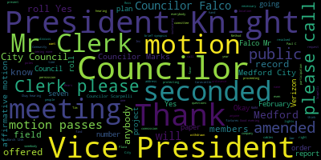
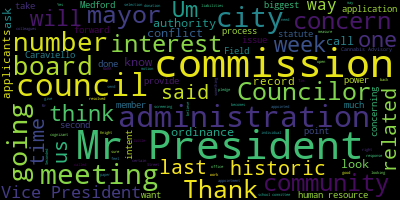
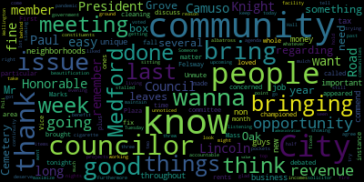
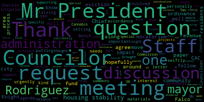

[Caraviello]: Good evening. The seventh regular meeting of the Medford City Council, February 16th, 2021. Mr. Clerk, please call the roll.
[Hurtubise]: Councilor Bereson.
[Caraviello]: His hand is up. His hand is up. He's present. OK, great.
[SPEAKER_07]: All right, I'll make him close his hand. Councilor Feldman.
[Caraviello]: Present. President, please rise and salute the flag.
[Falco]: I pledge allegiance to the flag of the United States of America, and to the republic for which it stands, one nation, under God, indivisible, with liberty and justice for all.
[Caraviello]: Pursuant to Governor Baker's March 12th, 2020 order, suspending certain provisions of the open meeting law, Chapter 38, section 18 of the governor's March 15, 2020 order imposing strict limitations on the number of people that may gather in one place. This meeting of the City Council will be conducted via remote participation to the greatest extent possible. Specific information and guidelines for remote participation by members of the public and their parties with the right or requirement to attend this meeting can be found on the City of Medford website at www.medford.org. For this meeting, members of the public who wish to listen or watch the meeting may do so by accessing the meeting link contained herein. No in-person attendance of the members of the public will be permitted, but every method will be made to ensure that the public can adequately access to proceedings in real time by a technological means. In the event we're able to do so despite our best efforts, we will post in the city of Medford or the community media website in audio or video recording transcript or other comprehensive record of the proceedings as soon as possible after the meeting. Okay. Hearings 21058. Petition for a grant of location, Verizon New England Inc, underground cables and fixtures, Medford Mass. You are hereby notified that the, by the order of the Medford City Council, public hearing be given via Zoom at seven o'clock on Tuesday, February 16th, 2020 on a petition of Verizon New England for permission to locate underground cables and fixtures, including the necessary sustaining and protecting figures to be owned and used in common by petitioners along and across the following public way, Medford Street, Also for permission to erect and maintain poles, wires, and cables together with anchors, guides, and other such sustaining and protecting fixtures that they find necessary said poles to be erected substantially in accordance with plan marks VZNE Inc. Plan Number 1A4Y6XY, dated December 30th, 2020, and filed in the office of the city clerk Whereas it prays that after due notice and hearings by law, it will be granted joint or identical locations for permission to erect and maintain poles, wires, and cables together with anchors, guides, and other such sustaining and protecting fixtures as they find necessary. said polls to be erected and substantially in accordance with the plan marked VZNE Inc. Plan Number 1A4Y6XY and available for inspection in the Office of City Clerk, Medford City Hall, Room 103. George P. has to drive. The following. The motion to waive the remainder of the reading for a brief synopsis from the motion by Councilor Knight to waive the reading. Seconded by Councilor Falco. Mr. Clerk, please call the roll.
[Hurtubise]: Councilor Bears. Yes. Councilor Falco. Yes. Vice President Knight. Yes. Councilor Marks. Yes. Councilor Morell. Yes. Councilor Scarpelli. Yes. President Caraviello. Thank you.
[Caraviello]: Well, this is a public meeting. Do we have anyone that is in favor of this project? Anybody from Verizon here? Ross, are you representing Verizon this evening? Is anybody from Verizon here this evening? I just unmuted Ross Bilodeau. Ross Bilodeau, are you here? Hello, can you hear me? I can hear you. All right. Are you in favor of this project?
[SPEAKER_10]: Yes, I am.
[Caraviello]: Thank you very much. Anyone else in favor of this project? Hearing and seeing none, we move on. Is anyone that is opposed to this project? Anybody that's in opposition? Okay, hearing and seeing none, move on. Russ, name and address of the record, and if you can give us a brief synopsis of the project.
[SPEAKER_10]: Sure, my name is Russ Bilodeau, representing Verizon New England, 21 Oxford Road, Mansfield, Massachusetts. The petition I have is actually to place one four-inch conduit from a manhole on Medford Street and extend across the town line into Somerville. to a new customer place manhole, hand hole rather, on Dexter Street. I know that the portion of this work that falls in Medford is probably only five or six feet, but we will be connecting from a manhole to a customer place hand hole on the opposite end of that conduit.
[Falco]: Councilor Belco. Thank you, Mr. President. I threw you to, the representative from Verizon. If this gets approved, do you know when the work will be taking place?
[SPEAKER_10]: Not offhand, no. I know that this is for a customer and it's pending service orders, so probably as soon as they can get to it.
[Falco]: Actually, if you could just clarify, what service are they actually providing to the customer?
[SPEAKER_10]: I'm not sure. Some sort of fiber service. That's all the information I was given.
[Falco]: Okay, so do we know the duration of the project?
[SPEAKER_10]: Probably no more than two or three days.
[Falco]: Two or three days, okay. And what's the impact to the residents that live in that area?
[SPEAKER_10]: Well, I mean, we will have to dig a trench and put a conduit in the ground, so there should be some minor impact. Nothing too crazy. It doesn't happen over a day. We can plate the road and come back the next day and finish.
[Falco]: The residents going to be notified?
[SPEAKER_10]: Yes, they all should have been notified as a part of this hearing.
[Falco]: Will they be notified when the work is being done?
[SPEAKER_10]: We can make that a possibility, yes.
[Falco]: If you could, I think that would be just good if we could just make sure that residents of that neighborhood receive some sort of a message with regard to how they're going to be impacted.
[SPEAKER_10]: Sure.
[Falco]: That is it for now, yes, thank you.
[Scarpelli]: Councilor Scarpelli. Thank you, Ross. We appreciate you being here tonight. My question is, whether it's 100 feet or five feet, what is the expectations of the resurfacing of that road as you enter to Medford?
[SPEAKER_10]: Well, I do understand that the DPW laid out some, let me get back to it here. They did, I can't find it. They laid out some conditions for some milling and paving and restoration of sidewalks as necessary. So all those conditions will be met.
[Caraviello]: Okay.
[SPEAKER_10]: Thank you.
[Caraviello]: Tim, I see you're on the call. Anything you want to add? Yeah.
[McGivern]: Thank you, Mr. President. I would just add that this is a very small piece of of the whole project. So like you said, I think five or six feet. And the other thing I would mention, it's in between an existing crosswalk with some granite edging and some nice stamped brick work. So out of all the restoration that that's, you know, what needs to be put back in place properly. And as far as the cut goes, we're gonna lay out where we think the restoration makes the most sense for them. And just because this is an odd one, it's just a kind of a strange spot.
[Caraviello]: Thank you. Any other questions for the council? Okay, hearing and seeing none. The motion by Councilor Scarpelli for approval, seconded by? Seconded by Vice President Knight. Mr. Clerk, please call the roll. As amended by Councilor Falco. Councilor Bears.
[Scarpelli]: Councilor Falco? Yes. Vice President Knight? Yes. Councilor Marks? Yes. Councilor Morell? Yes. Yes.
[Caraviello]: Yes. Motion passes. Motions, orders and resolutions. 21059 offered by Vice President Knight, be it resolved that the city administration provide the council with a copy and explanation of the hiring process and policy surrounding the appointment and selection of board and commission members. Vice President Knight. Mr. President, thank you very much.
[Knight]: I appreciate you reading this into the record. Very recently, I received an email with a post indicating that the Benford Historic Commission was seeking applicants to fill a vacancy. And at first glance, I looked at it and I said, That's no big deal. And then I went on to read the requirements of the application. And I have some talking points on this. The historic commission is calling for letters of intent for interested parties to join their commission. Applicants should have an interest knowledge and experience in fields related to historic preservation and method history. And they may contact the commission for further information. Candidates may be contacted by the commission for an interview and the commission shall then present a list of nominees to the mayor for final selection and appointment. And this struck me as odd, Mr. President. The way the boards and commissions are filled usually doesn't operate in this fashion. The composition, appointment, powers, and duties of the commission are outlined by statute, by general law, chapter 40, section 8D. And nowhere in that legislative act, does it provide the commission with human resource authority or selection power? That power is the exclusive purview of the mayor, Mr. President. So when I look at the commission seeking to attain letters of intent to then screen applicants to then send it to the mayor for who's going to be appointed, it becomes concerning to me. It's a clear overreach of the authority that's outlined in the statute, Mr. President. And it's problematic from a human resource perspective. A member of a board of commission, once appointed, becomes a city employee. And that opens a city up to certain liabilities. When you're applying for a position on a board or a commission, the process should be open, transparent, but you should also be very cognizant of workers' rights and the applicants' rights, Mr. President. I don't think that the board of commission has the technical expertise to ensure that the city's liabilities aren't going to be at risk. Further, when a board of commission is the screening entity to select members of its own board of commission, creates the impression that this becomes a good old boys club, a network where you have to be a friend of the board in order to participate. The mayor was the person that was vested with this authority through statute for a reason. It's so that we can have a diverse board that represents various aspects and walks of life in our community that have concern and interest over our historic preservation So I thought that that was very concerning, Mr. President. And the biggest, most concerning part of it is that, you know, certain applications will never reach the mayor's desk. The commission will interview individuals and then they will send to the mayor who they feel should be appointed after their screening process. So that raises some concerns relative to record retention and the like that surround the municipal government, Mr. President. So with that being said, I'm asking that the, the administration report to us what their hiring practices, what their policy is, and take a look into this issue that's going on with the historic commission because I feel as though number one, it's a extreme overreach of the statutory authority, number one, and number two, opens the city up to liabilities related to the human resource world and also records retention and other criteria that behest upon a professional administration related to the implementation of human resource policies. So with that being said, Mr. President, I ask my council colleagues to support this measure. Um, you know, and looking at it, I feel as though it's somewhat odd that a border commission would try to handpick the members that they're going to serve with and the members that they're going to work with. I think that that's problematic and I don't think that that was the intent of the state statute that was passed when it was enacted here in the city of Medford to establish a historic commission. Thank you, Mr. Vice President.
[Morell]: Thank you, Mr. President. I think this is a worthy thing to look into for all commissions that I think Councilor Knight, Vice President Knight for bringing it up. I am curious if we could add as either a B paper or an amendment just to get an updated list of stipends associated with commissions, as well as length of terms, if we're going to be asking for this information, just to have it all in one place.
[Knight]: I certainly have no problem with that, Mr. President. I do believe we look back in our package four weeks, four and a half weeks, five weeks ago, I believe we did get a copy of the list of the boards of commission, but I have no problem asking for that again.
[Morell]: Yes, thank you.
[Knight]: Chief of Staff Rodriguez.
[Dave Rodrigues]: Thank you, Mr. President. Thank you, Vice President and I for bringing it up. I wasn't aware of the email that was sent out by the historic commission. If you could forward that over to the administration, I'd appreciate it so I can take a look. From one of the first things that we did once we came into office last January, was to put together an interest forum for folks that's currently on our website that anyone in the community can fill out and email to boardsandcommissions at medford-ma.gov to show their interest directly to us. And we build a database as it exists for people who are interested in commissions. So as vacancies come up, those are the people that generally we reach out to to gauge their interest in serving on a particular commission. So I'm curious about this process that's being entered into by the historic commission as well. And I wanna reach out to them and make sure that it's in alignment with the exact processes that you were talking about, the human resources aspect of it, the diversity aspect of it, and kind of the existing practice that we've enacted since we came in office. in January. So if you could turn it over, I'd appreciate it just so I can take a look. But that's been generally the process that we've been following since last January.
[Knight]: Mr. President, through you to the gentleman. Thank you, Vice President Knight. Through you to the gentleman, Mr. President, that was our case in point when we were speaking about some of our appointments that the council has authority for. We requested that the administration provide us with any applicants that expressed interest in the Mel commission, for example, because I was under the impression that they had a policy. So this is just something I want to make sure that I'm able without a rise across it. It's a slippery slope. And I appreciate the chief of staff for his willingness to investigate. Thank you. Councilor Belco.
[Falco]: Thank you, Mr. President. Thank you, Councilor, for bringing this forward. This is important. It's very important. We need to make sure that we get the process that we, but that the administration is doing the process right, making sure that we're consistent with the way we do this. And I just say, actually, through you to Chief of Staff Rodriguez. Is it possible, I just kind of did a little preliminary research this past weekend when I saw the resolution on the agenda. Can we just make sure that the online list of commissions is just updated? It seemed like some people's terms may have actually expired. And we just make sure that's an up-to-date list on the website. And if someone knew, Yeah, someone who took on a role, they should be listed and the terms should be listed as well on the expiration dates. But I look quickly and it looked like there was some that expired back last year. So I just wanna make sure that's up to date so people can see if there's any availability or if there's any vacancies on the commissions. Thank you. Thank you, Councilor.
[Caraviello]: Any further questions on this?
[Falco]: And if I could add that as an amendment.
[Caraviello]: as amended by Councilor. Thank you.
[Dave Rodrigues]: Yeah, well, that's been an ongoing project of the office for a while. So we're trying to keep up with it. And we'll be doing our call for interest in several boards and commissions in the next couple of weeks. Thank you.
[Caraviello]: Thank you. On the motion by Vice President Mayne, seconded by Councilor Falco, as amended by Councilor Morell, and amended by Councilor Falco. Mr. Clerk, please call the roll.
[Scarpelli]: Councilor Bears. Yes. Councilor Falco. Yes. Vice President Knight. Yes. Councilor Marks.
[Hurtubise]: Yes.
[Scarpelli]: Councilor Morell. Yes. Councilor Scarpelli. Yes. President Caraviello.
[Caraviello]: Yes, seven in favor of the motion passes. 21060 offered by President Knight. Vice President Knight has been removed, has been withdrawn.
[Knight]: Withdrawn the paper, Mr. President, the administration not provided that information prior to the meeting.
[Caraviello]: Thank you. 21061 offered by Vice President Knight has also been withdrawn.
[Knight]: Yes, Mr. President, the administration has established the Cannabis Advisory Commission meetings. They kicked off just last week, I believe.
[Caraviello]: Thank you. 21062, offered by Vice President Knight, has been withdrawn.
[Knight]: Yes, Mr. President, that was related to the Board of Health, and the administration has put out a couple of new hotline numbers related to COVID vaccine response and coronavirus response. I did have a difficult time reaching the individual on the phone there last week, I called over 30 times and did not get a live operator. But it appears that the administration's cognizant of the high volume of calls that are going through the office and have taken appropriate steps to address it. So I have no issue here.
[Caraviello]: Thank you, Vice President Knight. Vice President Knight, if you could take the chair,
[Scarpelli]: to take on 21063.
[Caraviello]: Motions, orders, and resolutions.
[Knight]: Council paper 21063 offered by President Caraviello. Be it resolved, the Medford City Council receive a report from the MWRA on what is the plan to return Memorial Field's fondant shelf in the Auburn Street side of the parkland back to its original condition or better. and be it further resolved that while Memorial Field is being used by the MWRA, now would be the time to discuss changing the lighting at the field and possibly with some assistance from the MWRA.
[Caraviello]: Councilor Caraviello. Thank you, President Knight. This is something, I don't know, people have been driving by and they've been seeing the large amount of work being done by the MWRA, both at the Carleton Shell, Memorial Field, and on the other side of the river. And I think it's just work they're doing, I think they're lining the pipe. But for whatever they're doing, field and everything is getting pretty beat up. And summer's going to be, the spring's going to be coming, and the kids are going to be down there, going to be looking to play a little league ball. And I would hope that the MWRA will be finished, and putting that field in Carleton Shell back to its original condition and better. And also, this is something that I brought up many times over the years about the lights at Memorial Field being on all the time, never shutting off. and they were saying they're old and they have to be fixed. So while the field is dug up in MWRA, I would think now would be the time to discuss changing those lights and maybe using the MWRA to help pay for some of that. So I'd ask my councilors for support and any suggestions to how we can maybe get these lights changed.
[Falco]: Councilor Falco. Thank you, president. Councilor Caraviello for bringing this forward. This is something that definitely needs to be addressed. We need to receive some sort of an update, but specifically if I could amend the paper to get the timing of the project and when it will be complete, I think that will go a long way in trying to figure out how we can resolve the situation.
[Knight]: On the amendment, does the chair have a second? Second. Seconded by Councilor Scarpelli. Councilor Scarpelli.
[Scarpelli]: Thank you. Thank you, Councilor. President Caraviello bringing this forward. We see the movement. It would be nice to hear if there's any discussion with the city administration with any open requests from the Community Preservation Committee that there could be something worked together. If there is any requests from the city to work together, maybe to make that park that I know it's a state run facility, but maybe it might be something that we can work with the DCR and MWRA to maybe take control of that. And one of the issues with the lights that we've had in my profession, when we've had issues with that, Councilor Caraviello, it might behoove us that we request the DCR and our director of DPW look into the possibility of putting in satellite system where it could be controlled via your iPhone. And it's a very easy fix. I know that some lighting systems are outdated, but in my community where I work, there was an outdated system. We thought it wouldn't be compatible, but it was only a $5,000 fix that turned a whole field that lights are being left on. and to a very easy solution. And the money that was saved just on wasted electricity on those lights that were left on over and over again, it saved, that box saved the outgoing funding and they take a few trips. So if we could ask the Director of Lines, Wise Lines and maybe the DPW Director, to work with DCR about seeing if it's compatible to put in the, I'm not, I think athletic director Maloney might have the company that does it through the satellite system. So if they can work together to see if we can do that, that might be a solution.
[SPEAKER_15]: Thank you.
[Knight]: Thank you, Councilor Scapello. Chair, would you second on Councilor Scapello's motion? Second. Seconded by Councilor Caraviello. see that we have Tim McGivern on the call. If any of the council is one of anything else they'd like to add, maybe we can ask Tim if you can give us an update on the status of the construction location. Tim.
[McGivern]: The MWRA manhole project in Memorial Field, that's what we're discussing, correct? Yes, that's correct. So that is all area that's within their rights to work and we don't have a lot of information on that. So if you guys asked me, I was gonna try to see if I could find some out for you. I don't know exactly when they're supposed to end, but I think I can find out whatever information you guys want from their team.
[Caraviello]: Thank you. Tim. Councilor Caraviello. Tim, I would hope that they're gonna put that field in cause and show back into, at least it's original vision, if not better. So even though it's their property, are the standards still the same?
[McGivern]: They would be, yeah, and Medford does have rights, lease rights on that land through DCR. So we have some rights, they have some rights. The expectation would be that, you know, they put it back to the way it was or better. And, you know, after this conversation, I can find out some more information, you know, find out when they're gonna end and find out, confirm that they're going to be putting it all back together. I haven't heard much about this project besides some of the early on scope and some of the early on traffic management that they wanted to do that they're, I think they're complete with. So it's basically work that's left on their property that they have kind of full rights to. Thank you.
[Caraviello]: On the motion of Councilor Caraviello, seconded by Councilor Falco, amended by Councilor Falco, seconded by Councilor Scapelli, amended by Councilor Scapelli, and seconded by Councilor Caraviello.
[Knight]: May the City Clerk please call the roll.
[Scarpelli]: Councilor Bears. Yes. Councilor Falco. Yes. Vice President Knight. Yes. Councilor Marks. Yes.
[Hurtubise]: Councilor Morell.
[Scarpelli]: Yes. Councilor Scarpelli? Yes.
[Knight]: President Caraviello? Yes. With seven in the affirmative, zero in the negative, the motion passes.
[Scarpelli]: Council paper 21064 offered by President Caraviello.
[Knight]: Be it resolved, the Medford City Council send a birthday wish to Anna Ekpenyong on the celebration of her 96th birthday. Councilor Caraviello?
[Hurtubise]: I just want to send out a birthday wish.
[Caraviello]: There was a constant volunteer vote that Western River Community Center and AACP, and anything really going on down there, and there is always involved. So I just want to wish her a celebration of her young 96th birthday.
[Knight]: Congratulations, Joanna.
[Falco]: Second.
[Knight]: on the motion of cuts look Harvey a little seconded by Councilor Falco. The city clerk, please call the roll.
[Scarpelli]: Councilor Bears. Yes. Council Falco. Yes. We get this right this time. Councilmarks. Yes. Council Morell. Yes. Councilor Scarpelli.
[Hurtubise]: Yes.
[Scarpelli]: President Caraviello. Vice President. Yes.
[Caraviello]: Seven in the affirmative, zero in the negative, the motion passes. 21066 offered by Vice President Knight, be it resolved that the Medford City Council request the Building Commissioner take the necessary steps to have the donation collection boxes located at Felsbury Plaza relocated to a location on the property that does not abut residential parcels.
[Knight]: Vice President Knight. Mr. President, thank you very much. This has been an ongoing issue in our community for a number of years, so much so that this council took the initiative to implement, just last meeting, a donation box ordinance that would give the building commissioner enhanced powers and responsibilities, as well as the city some control over the regulation of these types of businesses located in our community. One of the largest violators, biggest offenders of overflowing donation boxes would be the Felsway Plaza, Mr. President. And a number of years ago, a resident had brought their concerns to my attention. And it was something I think that we needed to take a look at, we needed to act on. And many numbers behind this rail have also taken a position that this is something that needs to be addressed, so much so that the council was able to pass an ordinance, seven in the affirmative, zero in the negative, moving this initiative through first reading. But currently, Mr. President, the ordinance has not passed and we need some relief in the neighborhoods related to Felsway Plaza and the location of some of the drop boxes that they placed there. So I bring this paper forward requesting that the code enforcement officer through the building commissioner's office take the necessary steps to have these donation bins relocated to a spot where there will not be a budding residential parcel, Mr. President. I ask my council colleagues to support this measure.
[Scarpelli]: Councilor Scarpelli. Thank you, Mr. President. Vice President, I bring this forward. I too received a few phone calls as soon as these eyesores were put back into place. And not only what was there, but now I heard that they've doubled. And what we're hearing and what we're seeing is exactly why we will move forward with the ordinance. Public safety being one, the idea of road infestation, and then again, the eyesore for abutters wake up and step on the front porch and see these four donation bins that, from what we were told, even the property owner doesn't know who they belong to. We put the ordinance into place. I've called the building department, the code enforcement officer. I know that Mr. Murky was working on this as soon as possible to make something happen, to get rid of these, remove these donation bins that, question whether they're donation bins or for profit. We truly don't know, but I know that something has to be done. And I know we await the passing of the ordinance that this council worked so hard to put forward to make sure this doesn't happen. But here we are in the middle of the night, someone comes in and just drops four bins right in front of their home with piles of snow and these projecting out. Drivers either entering Fellsway Plaza and cars leaving the plaza are having a difficult time to see and are causing a very dangerous situation for our residents and shoppers in that area. So thank you for bringing this forward Councilor Knight and hope we see some movement quickly.
[Marks]: Thank you, Mr. President. I want to thank Councilor Knight for putting this on tonight. Indeed, there are a number of these drop boxes throughout the community. The Fells Plaza over the last many years has been an issue of concern to many area residents and as well as this council. Many calls have been made to the property owner of Fells Plaza to no avail, to be quite frank. Recently, Mr. President, There are a number of drop boxes that were located, if you're familiar with it, at the entrance of where Aldi's is, that goes into the Fells Plaza. And the drop boxes are right next to the entrance. So when you're pulling in, you can't see the cars that are inside the lot that are coming towards you. It's a very, very dangerous situation. And even though we have an ordinance now that hasn't been signed, but will be signed shortly, you can't legislate common sense. And common sense would dictate that you don't put these giant mountains of steel next to an entrance and an exit, because it's very difficult to see cars coming and going into the lot. And it creates a safety concern, Mr. President. And even for pedestrians walking by that area, there are a lot of people that walk the Fells Way. It's a very dangerous area to walk because of these boxes obstruct vehicles view of oncoming pedestrians or oncoming traffic, which is extremely dangerous. And I hope that we can get some results immediately by having these boxes. I agree with vice president should be removed. Mr. President, there's a giant area in the back of the Fells Plaza that you can drive, and maybe that should be where there's signage put for any drop-off blocks for the Fells Plaza, that they'd be located behind the Fells Plaza, which is a safe area and somewhere people can drop donations. That area has also become an area where you leave off discarded old TVs, old computers, you know, old clothing, you name it, it's been left out there. And I don't blame the area residents. I know we have an area resident, Mr. Poley, up here tonight that would like to speak on the issue, Mr. President, that lives across the street and has to deal with the unsightliness of these boxes and the public health concern with these boxes on a daily basis. So I want to thank my colleague again for putting this on. Thank you, Councilor. Councilor Falco.
[Falco]: Thank you, Mr. President. I want to also thank Vice President Knight for putting this on the agenda tonight. This has been a continuous issue, an absolutely continuous issue that has gone on for years. You're right, we worked out an ordinance. We have an ordinance drafted. It passed its first reading, and soon we'll have something in place that has some teeth in it that can help us manage this. But for the time being, this does need to be addressed. And it's gone on far too long. As my council colleagues have mentioned, it's a safety issue, but I think one of the big things is it's a quality of life issue. For anyone that lives in that neighborhood, this is a quality of life issue. They get up, they have to see this every day. One of our residents sent me a video once, it was on fire. It was literally fire pouring out of the box. You shouldn't have to see that. I mean, you shouldn't have to look out your window and see that. Trash everywhere, things backed up, more outside the box than in the box. It's ridiculous. It needs to be addressed. I asked, I agreed with my colleagues that the code enforcement or someone from the building department needs to contact the owner and really take some action here and make sure that this gets resolved. But vice president, I thank you for bringing this forward tonight. And I second the motion. Thank you.
[Caraviello]: And if I could get your mail in two cents, you know, I was by the yesterday. There was no phone number on the box or company where it belongs to. And, you know, what spurred me to put the, the motion on last year for the ordinance to do this, was I had talked to somebody from another box. And he explained to me, and he helped me out with the ordinances, and he also gave me the number to the company that's over the Fells Plaza. I don't think a lot of people understand that there's three different companies that own the Fells Plaza. And the company had no idea that those boxes, and they were there for almost a year. that they were there. So again, I don't even know if the owners of that part, the fellows even know that it's there. So again, I do support my fellow Councilors' motions to have this cleaned up again. Can we have somebody in presence that would like to speak on this? Good evening.
[SPEAKER_15]: Name and address of the record, please. 669 Felsway. I lived there 51 years of my life, and I've never seen such a disgrace in my life. They had removed, I got videos that caught on fire. I have videos that they made mess. I believe last year they removed everything. They came in with a bobcat, a flatbed to remove all these bins that had babies that appeared. They have two more babies and they appeared again. It might be a good cause for these bins. They tell me it's for kids with cancer, kids, people that, houses catch on fire, they need clothing. But we're in the middle of a pandemic here. I see people dying every day. I work at Melrose Wakeville Hospital, and I do the sign on the cross every time I walk by the, where they put the dead people in. It's sad. I mean, they're gonna catch diseases from this. I don't know what sanitation they go through to wash these clothes. I just want them relocated back, like Mr. Mark says, in the back of the plaza, where it belongs, near the trash compactor. Who cares? They're going to be washed. They're going to be sanitized. And those people that have Facebook, that are on Facebook for this, live across the street from there. They tell me, oh, I got two lanes, I got a sidewalk, I got this, I got that, I'm five distance. I open my window and I see this in front of my house. It's a disgrace. People get off the T, see the bags of clothing. They walk by, they shuffle through it. It's disgusting. They go through that and I think it's disgusting. So thank you for, you know, putting this on the agenda. Thank you for all you guys do with this pandemic going on. You guys are well-deserved. I'll give you a round of applause. Thank you, Mr. Foley. Thank you. Thank you.
[Scarpelli]: Thank you. Thank you.
[SPEAKER_15]: Thank you.
[Scarpelli]: Thank you. Thank you. Thank you. Thank you. Thank you. Thank you. Thank you. Thank you. Thank you. Thank you. Thank you. Thank you. Thank you. Thank you. Thank you. Thank you. Thank you. Thank you. Thank you. Thank you. Thank you. Thank you. Thank you. Thank you. Thank you. Thank you. Thank you. Thank you. Thank you. Thank you. Thank you. Thank you. Thank you. Thank you. Thank you. Thank you. Thank you. Thank you. Thank you. Thank you. Thank you. Thank you. Thank you. Thank you. Thank you. Thank you. Thank you. Thank you. Thank you. Thank you. Thank you. Thank you. Thank you. Thank you. Thank you. there's an open space that they could be utilized. So I don't think it's, you know, for the cause, we're right, it's important, but as long as it's maintained and it's put in the proper place, we would support it. That's what we, you know, some of the issues we put into the, stipulations we put into the ordinance. So it'll be interesting to see, but again, I apologize that you have to go through this again, Mr. Foley, and thank you for coming up here this evening to share your information.
[Marks]: That's it. Mr. President. Councilor Marks. While we have Mr. Poli here too, he's been a big advocate of placing a pedestrian crosswalk on the Felsway. And at the intersection of Bradbury and the Felsway in particular, there is a current crosswalk there now, but you take your life in your hand crossing because there's no pedestrian controls there. And what happens is you're in a crosswalk, you think you're safe, and the minute the light turns green at Wellington Circle, that becomes a raceway. It's a good half a mile stretch that it becomes a raceway. And if you're caught midway and that fails, let me tell you, trying to cross, you are in trouble. And I see it happen constantly. And I know Mr. Poli has been a big advocate I know this council has voted on several occasions asking our state delegation to look at putting an active pedestrian crossing right there, which is needed. Tonight we'll be voting on a paper 21-068 from the administration asking that they put a transportation engineer from the money we're getting from Wynn Resorts, Mr. President. And much of that money is targeted for transportation and safety improvements in the Wellington area. And I can tell you firsthand, there hasn't been much improvement in the Wellington area. With all this new development going on, that area has received very little upkeep and very little in regards to safety initiatives for pedestrians and vehicular traffic and so forth. So I would ask Mr. President as part of this resolution that we send another message to our state delegation asking about an update for a crosswalk at the corner of Bradbury and the Felsway, a pedestrian crossing in the interest of public safety. Thank you.
[Caraviello]: Okay, any further, excuse me, Paul C has his hand up. Paul C, name and address of the record, please.
[Camuso]: Unmute. Paul Camuso, 114 Lincoln Road, Medford Mass, here in our fine community. First of all, I want to thank the Honorable Vice President Knight for bringing this up tonight. You know, this is an issue that has been championed for a long time. I remember Councilor Marks bringing up this very particular issue when I was a member of the City Council. You know, this is an easy fix. This isn't something that has to be long debated like the issue that I appeared on last week, which has, you know, brought up several more issues. I've been called from community members regarding Oak Grove Cemetery, for instance, regarding that matter in cleaning up the leaves in the fall. But I'll be at the committee of the whole meeting to discuss that, because I know my loved ones are very concerned about the leaves at Oak Grove Cemetery. But this is something that can be done easy. You know, the rents down there at Felsway Plaza are in the area of $30,000 plus a month. They have made several beautification projects on that facility. but I have to agree with Mr. Poli. The people of Wellington do not deserve to look at that albatross. And I remember last year there was a fire out there right behind that box. Someone threw a cigarette, the mulch went up and then half of the box. We need to do what we have to do to maintain our neighborhoods. The top job as a city councilor is meeting the needs of the constituents in all these neighborhoods throughout the community and the councilors that are sitting there doing just that. So I wanna commend you. Furthermore, on a few other upcoming agenda items. I think that it's important to keep doing the people's business. You know, we're showing a continuity in government. People are down there doing the people's business week after week, and it doesn't go unnoticed. I just wanna tell you, councilors, this pandemic is slowing a lot of things down, but the Medford City Council is still meeting at City Hall on Tuesday nights, getting the job done that you're voted in there to do. So I wanna commend all of you. And thank you very much for listening.
[Caraviello]: Thank you, former Councilor Camusa. Any further discussion on this? Okay, on the motion by Vice President Knight, as amended by Councilor Marks, seconded by Councilor Scapelli. Mr. Clerk, please call the roll.
[Scarpelli]: Councilor Bears?
[Hurtubise]: Yes.
[Scarpelli]: Councilor Falco? Yes. Yes. Yes.
[Caraviello]: Yes. Yes. Yes, seven affirmative motion passes. 21067 offered by Vice President Knight being resolved at the Medford City Council request a copy of all the materials presented at the 211 CAC meeting.
[Knight]: Vice President Knight. Mr. President, thank you very much. As I had stated earlier in the meeting, the Cannabis Advisory Commission has been meeting. You know, today at 530, we met and we talked about the financial circumstances surrounding our community. We're looking at anywhere between a five and a half and $8 million structural deficit. And we need to come up with ways to generate revenues. And one of those ways that we can generate these revenues, Mr. President, is by enacting the voter approved marijuana dispensaries here in the city of Medford. And on the 11th, I did understand there was a meeting. I logged into the meeting and I watched a portion of it, and it did raise some concerns. This council, when it met and crafted the ordinance for the Cannabis Advisory Commission, did so in a fashion that was very cognizant of number one, the mayor's reported conflict of interest. Number two, keeping politics out of the selection process. And number three, ensuring that through the screening and application process, the entities that are going to be responsible for regulating these type of businesses in the community would have a large say in who gets to get a good score going forward to negotiate a host community agreement with the administration. The administration seemed to have quite a hands-on role in the last meeting. It's a little bit concerning to me because the legislative intent was to keep the administration separate. And the reason the council structured it that way was because the administration is going to be responsible for negotiating the host community agreement. So the administration was kind enough to provide us with the materials that were presented at the 2-11 meeting. The 2-11 meeting wasn't called by the commission, it was called by the mayor's office. That's like us calling a school committee meeting. We're the city council, we're not the school committee, we can't call a school committee meeting. The Cannabis Advisory Council has an outline responsibility in the ordinance, it's a duty. that they have to follow through with, Mr. President. And in looking at the materials that have been submitted, I haven't had a chance to give it a good glance because it was sitting on my desk when I got in here this evening. But it appears that they have put forward a proposed scoring system that adds weight to certain criteria more so than others. And I think that's really determination that the Canvas Advisory Commission should be making. Um, so I'm a little concerned about how this is going. But with that being said, Mr. President, I think the biggest concern that everybody has in here is that the mayor has this conflict of interest that she's expressed time and time again when it comes down to the issue of implementing the will of the voters and creating legislation that would authorize the marijuana dispensaries here in the community. Um, so at this point in time, Mr. President, I'd just like to ask the administration to disclose their conflict of interest to provide the council with a copy of the conflict of interest opinion. Um, that's a public documents, public record. Um, so that maybe some of these concerns could be set to rest because, uh, one of the biggest things that we want to ensure Mr. President is that we do this the right way. And the last thing we want is people in orange jumpsuits when this is all done. Um, so with that being said, you know, I want to make sure that everything's done about bar, um, and that, you know, every individual gets a fair shake. It does apply investment application. And understanding what this conflict of interest is, I think will be very helpful in us in alleviating some of our fears and concerns moving forward. The administration has made quite a pledge to transparency throughout many press releases and campaign pledges that have been made. And I see that that transparency pledge should apply here. It should be looked at. So with that being said, Mr. President, I ask my council colleagues to approve the measure. Thank you, Mr. Vice President. Councilor Bears.
[Bears]: Thank you, Mr. President. I want to thank Councilor Knight for putting this on the agenda. and I agree, you know, having this process move swiftly and in accordance with the ordinance is important for raising the revenue the city so urgently needs. And I agree with Councilor Knight's request for the conflict of interest letter as well. I just had one question for the administration. I do see Chief of Staff Rodriguez. Was the mayor personally involved in these meetings and setting up this meeting or any of the materials therein?
[Caraviello]: Mr. Roderick, is he still on the call? Dave, you on the call?
[Dave Rodrigues]: Yes, thank you, Mr. President. No, she wasn't. Yeah, the materials were prepared by staff in order to support the committee's efforts and the individuals that were selected by the council to serve on that committee and to do the actual evaluations. probably the five busiest people in the city administration. So the workflow was designed in order to support that and to make the value judgments be theirs, but to support them in any possible way that we can, to make sure that we can work through the timelines that were established by the council, work through things to be clean, quick, transparent, and every effort's being made to do that. So there's support, but every decision is being made by the CAC. to speak to the conflict question. The mayor did file a disclosure that's been on file with the city clerk for a few months now, that's available for public viewing, and that could be dispersed at the clerk's discretion whenever he feels the need.
[Bears]: Mr. President? Councilman Bench? Just kind of a follow-up to that. What staff are supporting the CAC, and did the CAC itself request specific staff support?
[Dave Rodrigues]: The staff support is Victor Schrader, who's the economic development director, who you all had a chance to work through. No, they didn't select it. This was done as part of a workflow management system on a workflow management plan to help the CAC with their work.
[Caraviello]: OK, thank you. Thank you. Mr. Mr. Rodrigue, while I get you on the call, has the mayor signed the ordinance yet? Yes. She has, all right, thank you. And if I could ask the clerk, if he could send us the letter with the conflict of interest would be appreciated. Paul C has his hand up. Name and address of the record, please.
[Camuso]: Thank you, Mr. President. Paul Camuso, once again, 114 Lincoln Road here in our fine community. I want to thank Councilor Knight for bringing this up this evening. You know, this is a very unique opportunity for the city of Medford to bring in new non-tax revenue, which is very important. You know, this is the revenues that we should be going after, not trying to take more money out of people's pockets. that might be living on fixed incomes and other things throughout this community. I think this is a unique opportunity. We have to try to maximize and hold the people that wanna come in accountable to benefit this community. You know, I would have liked to seen this done over the last two or three years before other communities had this off the ground. For whatever reason, it stalled under the past city solicitor, but I'm glad you guys got it to this. point where we're at today, working with the administration, and I think you have to bring in value with this. It's going to be a good opportunity. It's overwhelmingly been supported by the voters in our community, so it's a good source of new non-tax revenue to bring in that can do many good things in this community under the leadership of the mayor's office and this honorable body by putting the money to good use where you see fit. Let's get going and get out there and bring home the bacon as they say. Thanks guys.
[Caraviello]: Thank you for Councilor Camuso.
[Marks]: Any further questions? Mr. President. Councilor Marks. I would also ask like we do with most boards and commissions in this community that they hold meetings where we can receive the most community participation and to have a four o'clock meeting in my opinion is not advantageous to attracting a wide amount of people into this meeting. So I would ask that they look, I know they scheduled one for February 18th at 4 p.m., but in their next meetings, if they can respectfully look at making this meeting at a later time, Mr. President, for the, to allow for the most input from Method residents. Thank you, Council Member. Thank you. Any further questions?
[Caraviello]: Okay, on the motion by Vice President Knight, as amended by Council, sorry?
[Bears]: I'm just I have one more question. Um, just the previous comments brought up a thought for me. Mr. Rodriguez, are you aware of any impacts of the litigation and Cannabis Control Commission's, you know, discussions around host community agreements and how that might impact the process here?
[Dave Rodrigues]: We are closely monitoring that legislation as well as the SJC cases that were heard a couple weeks ago that involved the Salem and Marshfield communities. So we are keeping a very close eye on those particular cases as well as that legislation. From what I understand of the ordinance and of the process that's been set up, that will not currently affect how we do things, but that could change based upon the structure of the legislation that's passed at the state level or regulation that's passed by the CCC.
[Bears]: Thank you.
[Caraviello]: Thank you, Mr. Rodriguez. Okay, on the motion offered by Vice President Knight as amended by Vice President Knight and amended by Councilor Marks, seconded by Councilor Falco. Mr. Clerk, please call the roll.
[Scarpelli]: Councilor Bears. Yes. Councilor Falco. Yes. Vice President Knight. Councilor Marks. Yes. Councilor Morell. Yes. Councilor Scarpelli? Yes. President Caraviello?
[Caraviello]: Yes, 70 affirmative, motion passes. Communications from the mayor, 21-068, to the honorable president and members of the Medford City Council, City Hall, Medford Mass, dear Mr. President and city councilors, I respectfully request and recommend that your honorable body accept under the Massachusetts General Laws of 2020, chapter 325, to appropriate 75,000 $81.00 from the Method Casino Special Revenue Fund to fund a staffed transportation engineer position within the non-union cap dash 11 pay range $63,540.70 to $75,680.39. This request is in compliance with the Method and Wynn Casino Surrounding Community Impact Agreement specifically the transportation hub payment. City engineer Tim McGibbon is present to answer any of the City Council's questions. I have a role with the Gaming Commission that I represent the City of Medford. that oversees the funding of this year. And I also chaired that commission. So at this point, I will turn the meeting over to Councilor Marks to run it.
[Knight]: Yeah. Mr. President, I too, as the alternate to the gaming commission, will be joining you in a recusal.
[Marks]: President Marks. Councilor Falco.
[Falco]: Thank you, Mr. President. If I may, did you say Tim McGivern's on the line?
[Marks]: I believe he is. City Engineer, are you on the line?
[McGivern]: I am here.
[Falco]: Tim, yes, if you could please tell us a little bit more about the position, what the person will be doing, and is this in addition to Todd Blake, or is this... Sure.
[McGivern]: Could you give us a little bit more detail? Absolutely, and Chief of Staff David Rodriguez may chime in, and we have Todd here as well. So we'll get the three of us to answer whatever questions may come up. But basically, I think as everybody is aware, there are traffic and road impacts in general from just increased use of our roadways. We talk about it all the time. One of the contributors is obviously Wynn Casino, and as you are aware they're providing surrounding community agreement funding to help resolve some of these impacts. And it just so happens to align with the increased workload that Todd has been seeing over the past year, especially. And since I've started, I'm sure he's been one of the busiest people that I know. basically what we tried to do is take advantage of the SCA funds and to try to see where we can satisfy those needs as well as help meet some of the goals in the engineering office and for the city. So this person would be mostly assisting Todd in his work. Some of the things that we fall short on in the engineering office, private development review, traffic management plan review, Um, and as the council mentioned, there's a focus on the Wellington area, uh, and also mentioned tonight, there are impacts that hit the Wellington area more severe. Uh, so, you know, we're taking a look at projects in that area and we're taking a look at what they mean by the surrounding area, which, um, you know, the Wellington study that's going on right now sort of takes a big piece of Medford, uh, to consider the, the sort of the contributing area of Wellington station. Um, you know, my personal opinion is all of Medford is going to be impacted, is being impacted, uh, and, um, needs improvement and assistance in the roadway safety, transportation safety world. Um, so this would include things like field assistance, data collection, uh, for things like traffic counts, uh, even GIS data. Um, and like I was talking about it as development comes, because one of the things that's going to happen, development comes with, with things that are near transit stations. So we're already sort of, um, know what that demand is just from seeing projects come into town and we need improved reviews of those projects and what those projects are gonna be giving to the city. So that's sort of a broad overview, but I think it's something that we really need. It's something that I identified almost as soon as I started here as a need that we have. So I'm hoping this is seen favorably. Thank you.
[Falco]: Tim, thank you very much. Appreciate that information. It's very helpful to understanding this. And as far as with regard to the budget, so this here is actually, this is strictly money from the casino special revenue fund that has no impact on the city budget, correct?
[McGivern]: That's my understanding.
[Falco]: That's correct. So I make complete support of this. I know that I offered the original resolution years ago to bring on Todd. He's done a fabulous job. I know he's super busy. He's always representing the city. It's good to have someone at the table that's representing the city on various projects come in. Todd's done that. He's done a great job at that. I know I've talked to him numerous times just to make various traffic improvements within each of the neighborhoods in our community. And traffic is a real quality of life issue throughout our community, no matter what neighborhood you live in. And I think it would definitely be good to have someone on board that can help out. And I move approval, thank you. I second that motion, Mr. President.
[Marks]: On the approval by Councilor Falco, second by Councilor Scarpelli. I do have just a question to the administration. and I will call upon you next Councilor Morell. Are we anticipating that this will be a yearly appropriation that is received from Wynn Resorts and that the funding will be from Wynn Resorts going forward? Or will this eventually be part of the city budget?
[McGivern]: I'll let Dave talk to that, but I can talk to it a little bit. My understanding is this is an annual payment that is made every year. So it would be something that we would budget in into that. Hopefully the city grows and we can continue to meet strategic goals, but this is one step for meeting strategic goals for sure. So hopefully that answers your question.
[Dave Rodrigues]: Yeah, Tim kind of hit it. So this is an annual appropriation from the SCA special revenue fund that was set up by the council via home rule. Um, later earlier in 20. It was signed by the governor in late 21 late January 21. Excuse me, but there is no plans at this time to add this to the general fund appropriation. This is gonna be something that's gonna be exclusively funded through the special special revenue fund.
[Marks]: Thank you for that. My other question is to the city engineer. I know you mentioned that this has an impact on the entire community. However, I believe in living in the Wellington area that Wellington Circle along with the Felsway, Mystic Valley Parkway and Middlesex Ave will be a brunt of the traffic that is for this casino. And these are state roads. And I was wondering maybe if you could talk a little about what we're gonna do in conjunction with the city and the state because if these are roads that we have no jurisdiction over, however, they are roads that will be highly used, what are we doing in cooperation with the state to improve vehicular traffic and pedestrian safety in that area?
[McGivern]: Sure, and we have tied it to, but there's a couple of ongoing things. You know, right now, one of them is the underpass project. There's a quick build bike lane project. Those are both on the same stretch of route 28, So that's an example of some projects that are currently ongoing now. And then we also have some improvements that should be happening on Middlesex Avenue that we're working directly with the state. Well, we've done the work, now it's just the sort of wait for it to happen. And that's four intersections are getting basically redone, new ped ramps, one. I think one intersection is getting a flashing beacon, actuated flashing beacon. And then there's some mitigation elements that are happening because of the BJ's gas project, things like that. And your point is well taken, the idea, I've read this agreement too many times to count at this point. And I think, you know, my understanding of it is a little bit on the, you know, this casino is going to impact the whole city. But but, you know, the the transportation hub idea is that we have Wellington and we're going to have other transit stations, too. and those funnel people into those casinos. And you are right, that Wellington neighborhood, not only is it sort of blocked in by these roads, right? It's sort of, it's troubling for a pedestrian to get out of there and get to Wellington, for example. So things like that, we wanna take a look at. We wanna look at connectivity. We wanna look at, you know, where are pedestrians going? Why are they going there? And how do we, you know, help that out? And we have a list of, you know, there are lots of roads that are impacted, Riverside, for example, Commercial Street, Locust Street, we've seen some improvements there, and the list goes on. So it's not just those state roads, it's all the other roads that are connecting, including the first, second, third, fourth, all those, the residential streets. So it's the whole city with a focus on that area, really.
[Todd Blake]: Yeah, if I may add to that, that's a great point, Councilor Marks, because as you said, that area does get impacted, I would point out that even though there are a lot of state owned and operated roadways and even properties like DCR property, MBTA property, they do take up time for Medford city staff, right? So, and we want to improve those areas, not just Medford owned areas. So things like the underpass project, we coordinate with both MassDOT and DCR on that. With the route 28 bike lane quick build project, we're coordinating with Somerville, DCR, MassDOT, and possibly even private entities. So even though they're not Medford owned and operated roadways and even parklands, it does take a considerable amount of time to plan and advocate for this stuff and manage and design and things like that. So this will help Medford be the squeaky wheel, so to speak, right? With any of those state agencies to continually stay on top of those things on Middlesex Ave or Felsway, like the crosswalk at Felsway and Bradbury that was mentioned earlier. you know, continue to be the squeaky wheel on getting improvements for that crosswalk, whatever enhancements, you know, we could have an eye towards the long-term improvements, but also try to get quick immediate improvements as well whenever we can. So this will help us do that.
[Marks]: Right. And my, the reason why I bring it up, I just want to make sure that the fact that there are so many state roads in the area are not an impediment for us to move forward on issues of safety in the area. because of the fact that we may have to reach out to the state and that adds a whole other layer of red tape. I understand that, but I would hope that doesn't add to the layer of complexity when we need to get stuff done in the Wellington area. Councilor Morell.
[Morell]: Thank you, President Marks. If I could ask a question of Chief of Staff Rodriguez to the chair. The language that establishes this special revenue fund in one section notes that the treasurer of the city of Medford shall provide a report to the mayor and city council, which shall include but not be limited to the amount of donations and appropriations received the amount of grants and loans made and to whom and the balance of the special fund. I know this was just recently passed, so I'm curious when we might be able to expect to see something like that.
[Dave Rodrigues]: And I apologize if you could just repeat the question. My zoom dropped out a little bit. I dropped. I didn't hear the first part.
[Morell]: sure, in the in the acts that establishes special revenue fund, there is a section that says annually, the treasurer of the city of Medford shall provide a report to the mayor and city council, which shall include but not be limited to the amount of donations and appropriations received the amount of grants and loans made, and to whom and the balance of the special fund. I'm just curious, as I know, this was recently passed. I'm just curious, we could maybe expect to see something like that.
[Dave Rodrigues]: So that was language that was inserted by the legislature at their request through the legislative process. That's standard language for our special revenue fund. This is a static amount of money that's going to be according to the SCA. So it's not, and this is the only place that that money is going to be parked, and the only money that's going to be parked there. So the report is going to be the amount of money that's included within the SCA. So the expenditures are subject to appropriation, so those will all be there. We're going to, and I talked to Aleesha Nunley about this briefly, we're going to kind of treat this kind of academically like an enterprise fund. and say, this is the budget for this process going forward on a year by year basis, that would be subject to appropriation. But the static amount of money that's received year over year, there's no escalations within the SCA, so that would all be there. If you need a copy, I'm happy to scan a copy and send it over that outlines the exact amount of money that are gonna be parked in that account.
[Morell]: Yes, that would be much appreciated. Thank you.
[Dave Rodrigues]: Sure.
[Marks]: Are there any other questions from the council?
[Bears]: Mr. President.
[Marks]: Councilor Beals.
[Bears]: Thank you, Mr. President. And my question is through to Chief Staff Rodriguez. Two questions. What is the balance in the special revenue fund currently? And are there any projects in the Wellington area that don't require coordination with the state that you may be coming back to us for approval using these funds?
[Dave Rodrigues]: I don't know the balance at this time. I can get back to you. I'll email Alicia. And she'll provide that information, the exact balance in the special revenue fund. And then to the question about projects, I don't know the exact projects that are being planned. This engineer will obviously have something to do with that, the planning of any projects that maybe they're subject to. appropriation from the Special Revenue Fund. I'll defer to Tim and Todd about any particular projects that they might know that are in the hopper for that particular area, or any state projects that might be part of that discussion.
[McGivern]: So thank you very much. So there are a lot of potential projects. So right now, Wellington Study is happening. We're just getting kicked off. So one of the tasks would be to track that and be involved with that. and understanding the implications of our roads when a study like that is done, because it's a massive study. So it's most likely gonna trickle into our area. There are things that we've discussed in my office about potential projects to study. One of the things that bothers me about that whole neighborhood is the fact that if you are a pedestrian, how the heck do you get out of your neighborhood and get to Wellington? There's study opportunity. I think that there is project opportunity because as things like Middlesex Avenue get improved, some of the improvements I mentioned before, then we're going to also want to improve our side streets and all the roads that go through there. You know, just another potential idea is the Route 28 underpass project. That's going to leave its design phase at some point, and we'll need to build it. That's, I'm not saying we're going to use this money for that project, but it's a project that's coming to that area. And there will be more, you know, and Todd can, Todd's got more ideas than I do. Those are just a few. And I'm sure this council has discussed all sorts of ideas and we can mine through resolutions and figure out, you know, some big picture planning type efforts for the whole area, which is something we like to do. But anyway, Todd, if you have anything to add, please do.
[Todd Blake]: That's a good, thank you, Councilor for those questions because that's a good point. We're always looking to use the correct funding for the correct project or issue, right? So we're, you know, long-term goals involve bicycle connections along both sides of the river, things like that, crossing these major state roadways as well. So depending on the grants and funding available, we'll try to use those resources as best as possible so that we don't have to use city resources. We could go after gaming commission grant funds, which the city already does for say the 20 underpass project design. And then we could work with DCR and other state entities to figure out what the best pool of money is to go for the construction money for that, say as Tim just pointed out, maybe not these, but then looking at all those strategies collectively to best use the resources available to us so that we don't have to dip into city general fund for these things. So hopefully there'll be, you know, it seems like after looking at the state owned areas, there will be opportunity for city owned areas to improve things like on say, first, second, third street, those types of streets that may not get touched by major projects. Thank you both.
[Marks]: We'll second by Councilor Scarpelli. Mr. Clerk, call the roll.
[Scarpelli]: Councilor Bears. Yes. Councilor Falco. Yes. Vice President Knight has accused himself. I got to call you last. Councilor Morell.
[Morell]: Yes.
[Scarpelli]: Councilor Scarpelli. Yes. President Caraviello has accused himself. Acting President Marks.
[Marks]: Yes. Five in the affirmative, two recused. The motion passes.
[McGivern]: Thank you very much, Mr. President.
[SPEAKER_15]: Thank you.
[McGivern]: Thank you.
[Knight]: Mr. President, before we move on, I'd just like to take an opportunity to recognize the work of traffic engineer Todd Blake and his assistants in getting a couple of signs on the corner of Winthrop Street and South Street removed at the request of a constituent last week. He and I have been going back and forth for a few weeks trying to get this done. And I just wanted to thank him for his hard work and his effort in making sure that it became a reality. So I wanted to point out a job well done by our traffic engineer in response to a constituent concern, Mr. President. Thank you, Mr. Vice President.
[Caraviello]: Reports of committees. 2006-680, February 9, 2021. Committee of the report. The paper 20680, we met last week to discuss council priorities. And the council outlined a list of both budget and legislative priorities. And we had a discussion on both sides. And the papers have now been sent to all the councillors to figure out which papers are the most important to them. So I am awaiting the return of everyone's list to me so we can have a second meeting. On the motion to accept the report. Motion by Councilor Scarpelli, seconded by Councilor Falco. Mr. Clerk, please call the roll.
[Scarpelli]: Councilor Bears? Yes. Councilor Falco? Yes. Vice President Knight? Councilor Marks? Yes. Councilor Morell? Yes. Councilor Scarpelli? Yes. President Caraviello?
[Caraviello]: Yes, 70 permanent, motion passes. 21047, February 10th, meeting of the whole report. This particular report was to discuss the housing reduction plan. This was presented by Alicia Hunt, and many of the other members of the group, and this will be proceeding on to another meeting at a later date. On the motion by Councilor Scarpelli, seconded by Vice President Knight. Mr. Clerk, please call the roll.
[Scarpelli]: Councilor Peers. Yes. Councilor Falco. Yes. Vice President Knight. Yes. Councilor Marks. Yes. Councilor Morell. Yes. Councilor Scarpelli. Yes. President Caraviello.
[Caraviello]: Yes, I'm in the affirmative motion passes. 2003-00 slash 2003-02, February 11th. Subcommittee on elderly, and housing affairs. Councilor Bears, you are chairman of that committee, would you like to give a brief synopsis?
[Bears]: Thank you, Mr. President. Yes, we met last week, myself, Councilor Falco and Councilor Marks, along with members of the city administration and residents to discuss housing stability related issues. The first one was on the request by the council for the mayor to implement an eviction moratorium. We had extensive discussion. The legal questions had not been answered any further at that meeting than in the prior We were able to make some connections hopefully between some local residents who have experience in this area with the administration that hopefully will move that along. And we voted unanimously, neither favorably nor unfavorably to report the paper on the eviction moratorium request out to committee of the whole for further discussion. We also discussed the paper 20-302, which regarded some housing stability requests around a task force and we had a good discussion. There's a housing stability working group that is meeting convened by the office of community development and the mayor. We had some input into what the structure of that will look like. And we are planning a future meeting to follow up on that as well as on Councilor Falco's notification ordinance.
[Caraviello]: Thank you Councilor Bearsley. On the motion by Councilor Bearsley, seconded by Vice President Knight. Mr. Clerk, please call the roll.
[Marks]: Mr. President, before you call the roll. Thank you, Mr. President. I just want to add my two cents. I thought it was a very productive meeting that we held regarding the housing task force. Originally, we were looking at the creation of an ordinance to set up this task force, and upon deliberation and more discussion, we currently have a working group, as Councilor Bears mentioned, and we felt best to work with the existing working group and not pursue the ordinance avenue. And I think in that direction, it gives us much more flexibility and much more community input. And I look forward to working with this new task force when it's created.
[Caraviello]: Thank you, Councilor. So on the motion by Councilor Bears, seconded by Vice President Knight. Mr. Clerk, please call the roll.
[Scarpelli]: Councilor Bears. Yes. Councilor Keohokalole. Vice President Knight. Yes. Councilor Marks. Yes. Councilor Morell. Yes. Councilor Scarpelli. Yes. Vice President Caraviello.
[Caraviello]: Yes. Seven in the affirmative. Motion passes. Public participation. Do we have anybody from the public who would like to speak? Mr. Clerk, do you see anybody? I do not. Okay. Hearing and seeing none.
[Marks]: Mr. President. Councilor Marks. Mr. President, at some point, we do have a number of items under reports due slash deadlines. And I'm not saying we have to take them up now, but at some point we really should go through the reports due and deadlines. And let's just tidy up some council business. Okay. Thank you.
[Caraviello]: Councilor Knight. We have the records first. If I could have a moment. I just wanted to let everybody know that On March 12th, the Medford Public Library Foundation will be ending its paper program. So if anybody is interested in purchasing a paper for their family or their business, please reach out to either myself or somebody on the library to purchase one. There's a few left. So again, if anybody, March 12th is the deadline to purchase one. I want to thank everybody.
[Marks]: Mr. President. Also, if I could, we did get two correspondence back from the city administration regarding two council papers that were offered by myself. One being 21-036 regarding the condition of engine four and engine six, the leaking roofs. And we did get a correspondence back from the city administration saying they're working with procurement and the chief to begin to get quotes and move forward on these very important projects, Mr. President. So that was one correspondence we received from that paper. And then the other council resolution was regarding the water and sewer base charge. I won't read it all, Mr. President, but more or less it mentioned that a million dollars, roughly a million dollars a year goes towards the water and sewer bills in order to keep a flow of money into the account And there was a paper I think was offered by Councilor Scarpelli or Vice President Knight regarding the donations that are received through the tax bill for library, police and fire. And if I could Mr. President over the last three fiscal years, fiscal 19, 20 and 21 residents donated $4,719.21. to the fire station donation, and that was over three year period through their tax bill. The police donation was $2,687.92, and the library donation was $4,892 over the last three fiscal years. Thank you, Mr. President. Thank you, Councilor Martins. Anything else? Okay. Reckons, we're passed to
[Caraviello]: Councilor Marks. Councilor Marks, how did you find those records?
[Marks]: Mr. President, I didn't have a chance to look through the records. I would ask that they be tabled till next week.
[Caraviello]: All the motion by Councilor Marks that the records be tabled for one week. Seconded by Councilor Scarpelli. Mr. Clerk, please call the roll.
[Scarpelli]: Councilor Bears. Yes. Councilor Falco. Yes. Vice President Knight. Yes. Councilor Marks. Yes. Councilor Morell. Yes. Councilor Scarpelli. Yes. President Caraviello.
[Caraviello]: Yes, 17 affirmative. Motion passes. On the motion to adjourn. Motion by Councilor Scarpelli, seconded by Councilor Falco. Mr. Clerk, please call the roll to adjourn.
[Scarpelli]: Councilor Bears. Yes. Councilor Falco. Yes. Vice President Knight. Yes. Councilor Marks. Yes. Councilor Morell. Yes. Councilor Scarpelli. Yes. President Caraviello.
[Caraviello]: Yes, 17 affirmative. Motion passes. Meeting adjourned. Everybody have a good evening.
|
total time: 15.9 minutes total words: 2196  |
total time: 4.82 minutes total words: 916 |
total time: 7.44 minutes total words: 1062 |
total time: 12.41 minutes total words: 2298  |
|
total time: 1.23 minutes total words: 281 |
total time: 10.47 minutes total words: 1594 |
total time: 3.3 minutes total words: 633  |
total time: 2.59 minutes total words: 419  |
{kind=link}
{kind=link}
{kind=link}
{kind=link}
{kind=link}
{kind=link}
{kind=link}
{kind=link}